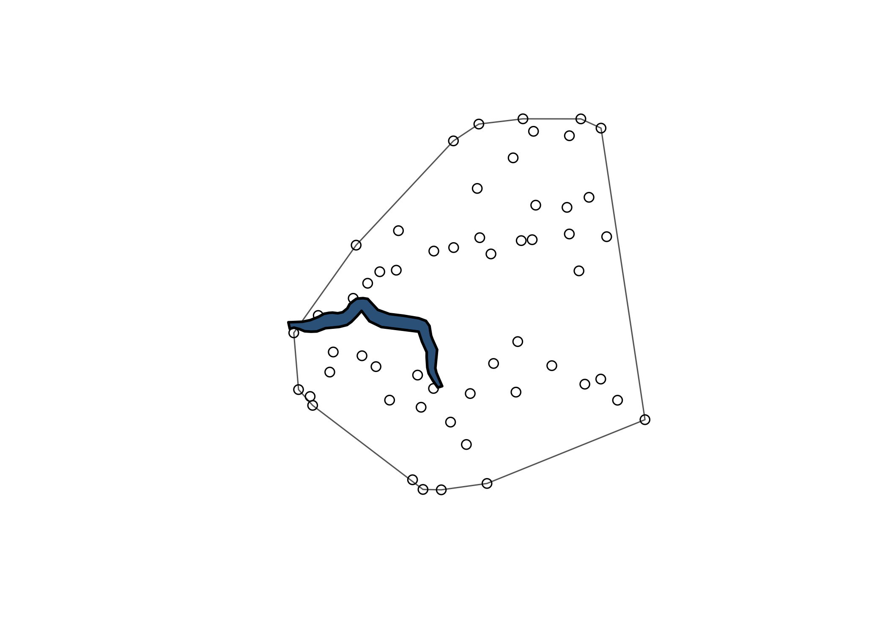
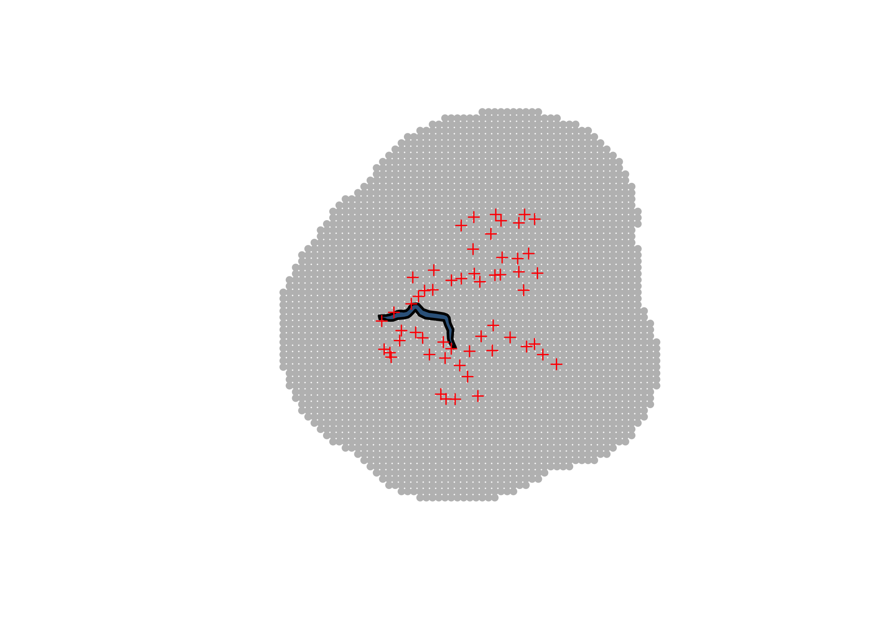
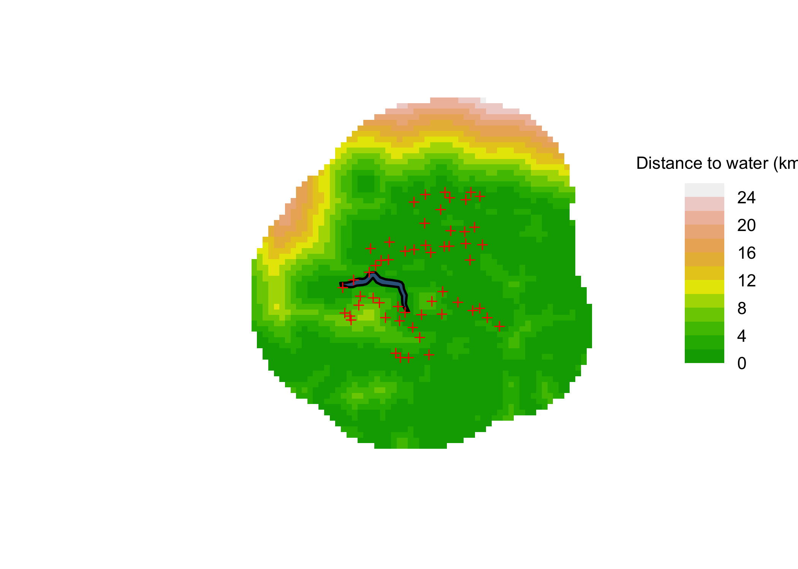
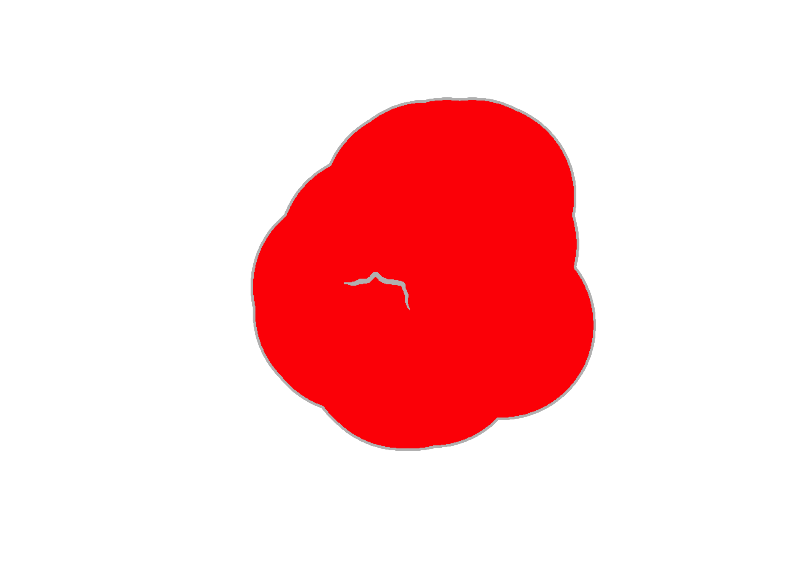
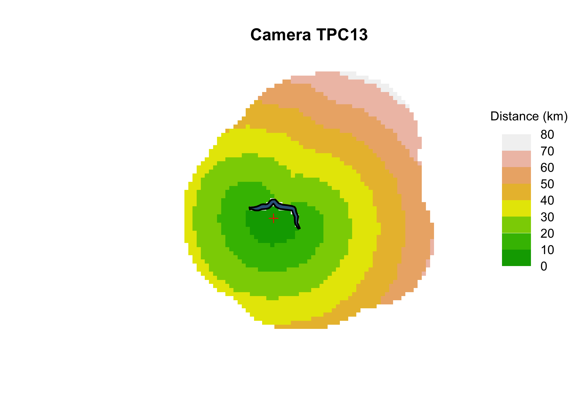

# Packages needed
library(dplyr)
library(terra)
library(secr)
library(sf)
library(elevatr)
library(gdistance)
capthist_file <- "tutorials/namkha_advanced/output/namkha_advanced_secr_inputs_capthist.RData"
output_file <- "tutorials/namkha_advanced/output/namkha_advanced_secr_inputs_mask.RData"
# Load the traps object created in script 01
load(capthist_file)
# User settings for mask spacing and trap buffer distance
mask_spacing <- 1500
mask_buffer <- 25000
elev_min <- 3000
elev_max <- 5500Create advanced masks
1 Covered in this tutorial
- Create the full Namkha mask and add spatial covariates
- Create masks at two spatial resolutions
- Download and cache elevation data
- Create elevation-constrained fitting and reporting masks
- Treat the gorge as a barrier to movement
- Create matching
userdistobjects for cropped masks - Save mask objects for later model fitting and reporting
2 Introduction
The basic mask represented possible activity-centre locations and included covariates used in density models. The advanced mask keeps that structure but adds two realistic complications: elevation constraints and a gorge that is treated as a movement barrier.
The fitting mask and reporting mask remain conceptually separate. The fitting mask can include activity centres outside Namkha if they are within range of traps, while abundance and density are later reported over the elevation-constrained Namkha survey area.
In this tutorial we also use masks at two different resolutions. The main secr mask is the grid used for model fitting, prediction, and reporting. A second, much finer mask is used only for calculating non-Euclidean movement distances around the gorge. Using the fine mask directly for model fitting would make the analysis unnecessarily slow, but using the coarse model mask to calculate paths around a narrow gorge would be too crude.
3 Preparations
This script loads the capture-history file from the previous vignette because the trap locations and coordinate reference system are needed to build masks.
4 Read the survey area and trap data
All spatial objects are transformed to the projected UTM coordinate system used in the analysis. Distances and buffer widths are then interpreted in metres.
# Read the Namkha boundary and project it to the UTM CRS used in the analysis
survey_area <- st_read("tutorials/namkha_advanced/data/survey_area/Namkha_RM.shp", quiet = TRUE) %>%
st_zm() %>%
st_transform(my_crs) %>%
st_geometry()
# Read the gorge line used later for custom movement distances.
# ADVANCED ISSUE: we will treat this gorge as a movement barrier.
gorge <- st_read("tutorials/namkha_advanced/data/survey_area/namkha_gorge.kml", quiet = TRUE) %>%
st_transform(my_crs) %>%
st_geometry()
# Turn traps into spatial points and create a buffer around all camera locations
traps_sf <- st_as_sf(full_traps, coords = c("x", "y"), crs = my_crs)
traps_buffer <- traps_sf %>%
st_buffer(mask_buffer) %>%
st_union() %>%
st_geometry()
# The full region is the union of the Namkha boundary and the trap buffer
full_region <- st_union(survey_area, traps_buffer)5 The Gorge
The gorge is imported as a line geometry and transformed to the same UTM coordinate system as the traps and survey boundary. Before using it in the distance calculation, it is worth making a simple orientation plot. This is not a polished map; it is a quick check of the spatial relationship between the camera array, the outer trap hull, and the gorge.
# Draw a convex hull around all traps to show the approximate camera-array extent
trap_hull <- st_convex_hull(st_union(traps_sf))
# Approximate area inside the trap hull, in square kilometres
st_area(trap_hull) / 1e61328.871 [m^2]# Simple plot of trap locations, trap hull, and gorge
plot(st_geometry(trap_hull), border = "grey40", col = NA)
plot(st_geometry(traps_sf), add = TRUE, pch = 1)
plot(st_geometry(gorge), add = TRUE, col = "steelblue4", lwd = 2)
This plot gives a first visual check that the gorge lies close enough to the camera array to affect movement distances. If the line were misplaced or in the wrong coordinate system, it would usually be obvious here.
6 Creating the mask objects
The first mask is the model-scale secr mask. It covers the union of the survey area and the trap buffer. This is deliberately broader than the reporting region, because animals outside Namkha can still be detected by cameras near the boundary.
The mask points are spaced at mask_spacing metres. This spacing is a compromise: fine enough to approximate the activity-centre surface, but coarse enough that model fitting remains practical. Later, a separate 200 m mask is used only for path-distance calculations around the gorge.
# Create a regular grid of candidate mask points over the full region
mask_grid <- st_make_grid(
st_buffer(full_region, 10000),
cellsize = c(mask_spacing, mask_spacing),
what = "centers"
)
# Keep only the grid points falling inside the full region
mask_points <- mask_grid[full_region] %>%
st_as_sf() %>%
cbind(st_coordinates(.)) %>%
st_drop_geometry() %>%
dplyr::select(x = X, y = Y)
# Convert the point coordinates to a secr mask object
mask <- read.mask(data = mask_points, spacing = mask_spacing)A quick plot of the model-scale mask helps check that the mask covers the intended region and that the gorge and traps overlay sensibly.
plot(mask, axes = FALSE)
plot(st_geometry(gorge), add = TRUE, col = "steelblue4", lwd = 2)
plot(full_traps, add = TRUE, detpar = list(pch = 3, col = "firebrick"))
7 Add spatial covariates
The mask gets terrain ruggedness, distance to water, and elevation covariates. Elevation is downloaded through elevatr and cached locally so that the script does not repeatedly download the same raster.
# Read the TRI raster and project it to the analysis CRS
tri <- rast("tutorials/namkha_advanced/data/spatial_covs/TRI_Namkha.tif")
tri <- project(tri, y = my_crs)
names(tri) <- "tri"
# Aggregate the raster so its resolution is closer to the mask spacing
aggregate_factor <- max(1, floor(mask_spacing / max(res(tri))))
tri <- aggregate(tri, fact = c(aggregate_factor, aggregate_factor))
mask <- addCovariates(mask, tri)
# Read the watercourse layer and calculate distance from each mask point to water
hydro <- st_read("tutorials/namkha_advanced/data/spatial_covs/Namkha_hydro.shp", quiet = TRUE) %>%
st_transform(crs = my_crs) %>%
st_union()
mask_sf <- st_as_sf(mask, coords = c("x", "y"), crs = my_crs)
covariates(mask)$d2hydro <- as.numeric(st_distance(mask_sf, hydro))
# ADVANCED ISSUE: read elevation data with elevatr and use it to clip the mask.
# The downloaded raster is cached so this only needs to happen once.
elev_file <- "tutorials/namkha_advanced/output/cache/namkha_elevation.tif"
dir.create(dirname(elev_file), recursive = TRUE, showWarnings = FALSE)
if (file.exists(elev_file)) {
elev <- rast(elev_file)
} else {
elev_download <- get_elev_raster(
locations = st_transform(st_as_sf(st_buffer(st_union(full_region), 10000)), 4326),
z = 10,
clip = "locations"
)
elev <- rast(elev_download)
writeRaster(elev, elev_file, overwrite = TRUE)
}
elev <- project(elev, y = my_crs)
names(elev) <- "elev"
elev_aggregate_factor <- max(1, floor(mask_spacing / max(res(elev))))
elev <- aggregate(elev, fact = c(elev_aggregate_factor, elev_aggregate_factor))
mask <- addCovariates(mask, elev)Distance to water is one of the easiest mask covariates to check visually. plot.mask() can colour-code the mask by a covariate, and scale = 0.001 displays the distance in kilometres rather than metres.
plot(
mask,
covariate = "d2hydro",
scale = 0.001,
dots = FALSE,
title = "Distance to water (km)"
)
plot(st_geometry(gorge), add = TRUE, col = "steelblue4", lwd = 2)
plot(full_traps, add = TRUE, detpar = list(pch = 3, col = "firebrick"))
Before fitting density models, check missing covariate values. Small numbers of missing values are replaced with the covariate mean; larger problems stop the script.
# Print missing-value counts and proportions for mask covariates
covariate_missing <- data.frame(
covariate = names(covariates(mask)),
n_missing = sapply(covariates(mask), function(x) sum(is.na(x))),
prop_missing = sapply(covariates(mask), function(x) mean(is.na(x)))
)
print(covariate_missing) covariate n_missing prop_missing
tri tri 0 0
d2hydro d2hydro 0 0
elev elev 0 0# Stop if more than 20% missing on any covariate
if (any(covariate_missing$prop_missing > 0.2)) {
stop("At least one mask covariate has more than 20% missing values.")
}
# Replace any missing covariate values with the mean of that covariate
for (covname in names(covariates(mask))) {
if (anyNA(covariates(mask)[, covname])) {
covariates(mask)[, covname][is.na(covariates(mask)[, covname])] <-
mean(covariates(mask)[, covname], na.rm = TRUE)
}
}
# scale any numeric covariates, first find mean and std devs over full mask
scaling_df <- data.frame(cov = as.character(), mean = as.numeric(), sd = as.numeric())
for (i in names(covariates(mask))) {
if (is.numeric(covariates(mask)[, i])) {
newi <- paste0("std_", i)
meani <- mean(covariates(mask)[, i], na.rm = TRUE)
sdi <- sd(covariates(mask)[, i], na.rm = TRUE)
scaling_df <- rbind.data.frame(scaling_df, data.frame(cov = i, mean = meani, sd = sdi))
covariates(mask)[, newi] <- (covariates(mask)[, i] - meani) / sdi
}
}
names(covariates(mask))[1] "tri" "d2hydro" "elev" "std_tri" "std_d2hydro"
[6] "std_elev" 8 Create masks used later in the workflow
The script saves several masks because each has a different role. mask_model is the elevation-constrained fitting mask inside the trap buffer. mask_survey_area_elev is the reporting mask used later for abundance, density, and maps.
# Keep a version of the mask restricted to the survey area
inside_survey_area <- lengths(st_intersects(mask_sf, survey_area)) > 0
mask_survey_area <- subset(mask, subset = inside_survey_area)
# ADVANCED ISSUE: create masks that exclude elevations outside the plausible
# snow leopard activity-centre range used for this tutorial.
inside_elev_range <- covariates(mask)$elev >= elev_min & covariates(mask)$elev <= elev_max
mask_elev <- subset(mask, subset = inside_elev_range)
mask_elev_sf <- st_as_sf(mask_elev, coords = c("x", "y"), crs = my_crs)
inside_survey_area_elev <- lengths(st_intersects(mask_elev_sf, survey_area)) > 0
mask_survey_area_elev <- subset(mask_elev, subset = inside_survey_area_elev)
# For model fitting, keep all elevation-constrained points within the trap buffer,
# including those outside Namkha
inside_buffer_elev <- lengths(st_intersects(mask_elev_sf, traps_buffer)) > 0
mask_model <- subset(mask_elev, subset = inside_buffer_elev)
# Save the trap buffer separately because it is useful for later plotting
all_sess_masks <- traps_buffer9 Non-Euclidean distance matrix
The gorge is treated as a barrier to movement. The model is still fitted on the usual mask points, but userdist replaces Euclidean distances with shortest-path distances that avoid the gorge.
The key distinction is between the model mask and the linear mask used for the path calculation. nedist() calculates distances between traps and model-mask points, but it finds shortest paths along the much finer mask_fine grid. The directions = 16 argument controls how neighbouring cells in that fine grid are connected, allowing queen and knight-style moves rather than only horizontal and vertical moves.
# ADVANCED ISSUE: the gorge is treated as a barrier to movement using a custom
# user-distance matrix for non-Euclidean movement distances.
# The gorge is narrower than the 1.5 km mask spacing in parts, so we calculate
# movement distances on a finer mask and transfer them back to the modelling mask.
mask_fine_all <- make.mask(
traps = full_traps,
buffer = mask_buffer,
type = "trapbuffer",
spacing = 200
)
# The same fine mask as above, but with the gorge removed.
mask_fine <- make.mask(
traps = full_traps,
buffer = mask_buffer,
type = "trapbuffer",
spacing = 200,
poly = gorge,
poly.habitat = FALSE,
keep.poly = FALSE
)
# Plot to compare full and gorge-less masks
plot(mask_fine_all)
plot(mask_fine, add = TRUE, col = "red", cex = 0.2)
# Calculate shortest paths between traps and mask points rather than Euclidean
# distances, so animals have to travel "around" the gorge rather than through it.
# See ?nedist or the secr non-Euclidean distance vignette for details.
userd <- nedist(full_traps, mask, mask_fine, directions = 16)
# Various subsets used by cropped masks
userd_elev <- userd[, inside_elev_range, drop = FALSE]
userd_model <- userd_elev[, inside_buffer_elev, drop = FALSE]
userd_survey_area_elev <- userd_elev[, inside_survey_area_elev, drop = FALSE]The diagnostic plot below colour-codes the model mask by distance from one example camera. Points on the far side of the gorge should have longer distances than their straight-line separation might suggest, because movement has to go around the barrier rather than through it.
# Check that distances from a given camera look sensible.
# Use a copy so the diagnostic distance covariate is not saved with the real mask.
dmap <- function(traps, mask, userd, i = 1, ...) {
plot_mask <- mask
d <- userd[i, ]
d[!is.finite(d)] <- NA
plot_covs <- covariates(plot_mask)
plot_covs$d <- d
covariates(plot_mask) <- plot_covs
plot(plot_mask, covariate = "d", ...)
points(traps[i, ], pch = 3, col = "red")
}
example_camera <- min(44, nrow(full_traps))
dmap(
full_traps,
mask,
userd,
i = example_camera,
dots = FALSE,
scale = 0.001,
title = "Distance (km)"
)
title(paste0("Camera ", rownames(full_traps)[example_camera]))
plot(st_geometry(gorge), add = TRUE, col = "steelblue4", lwd = 2)
Each cropped mask needs a matching userdist object. The columns of the distance matrix correspond to mask points, so subsetting the mask without subsetting userdist would misalign distances and mask locations.
10 Save mask objects
The saved objects support both fitting and reporting. The multisession-specific masks are created in the next tutorial.
# Save all mask objects needed by later scripts
save(
mask, mask_survey_area, mask_elev, mask_survey_area_elev, mask_model,
userd, userd_elev, userd_model, userd_survey_area_elev,
mask_spacing, mask_buffer, elev_min, elev_max,
scaling_df,
survey_area, traps_buffer, all_sess_masks, full_region, gorge,
file = output_file
)11 What comes next
The next tutorial creates one fitting mask and one matching userdist object for each temporal session in the multisession analysis.